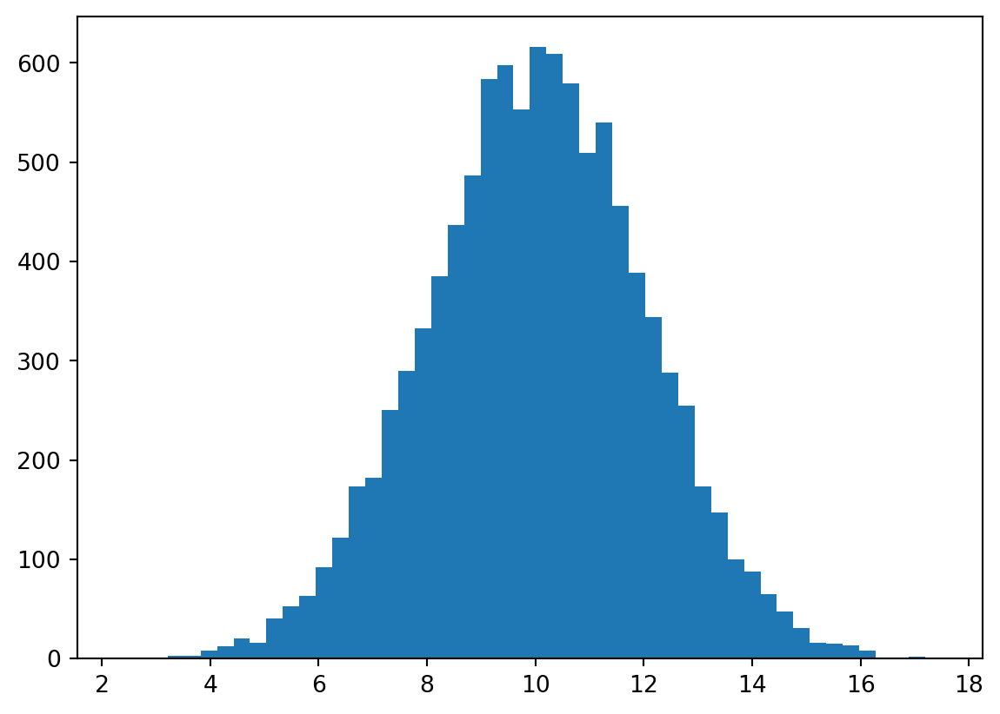
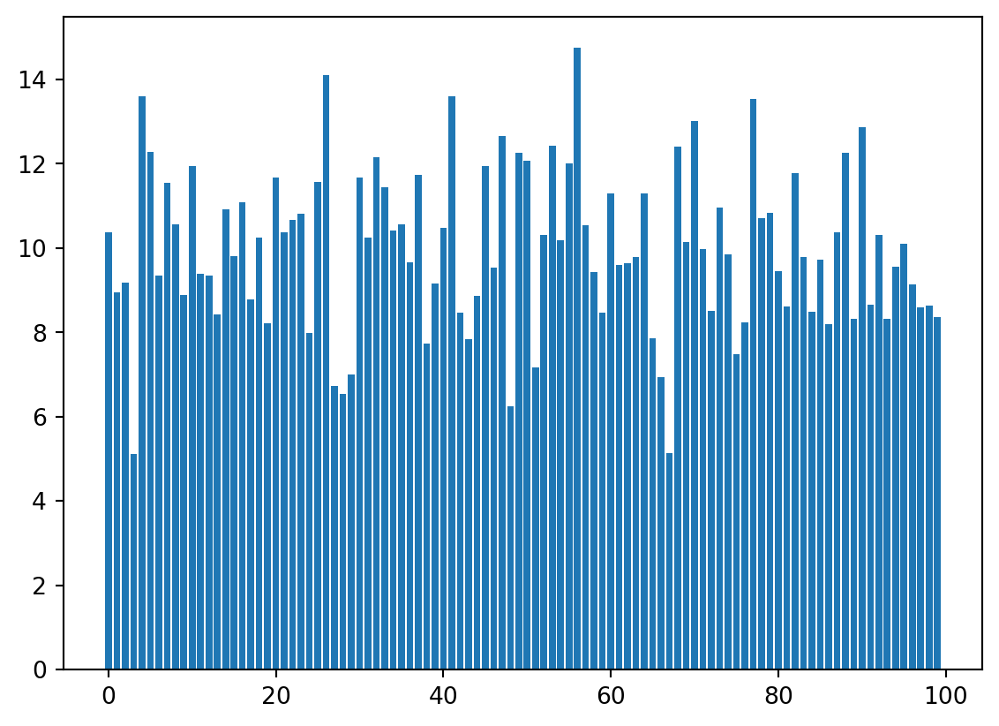
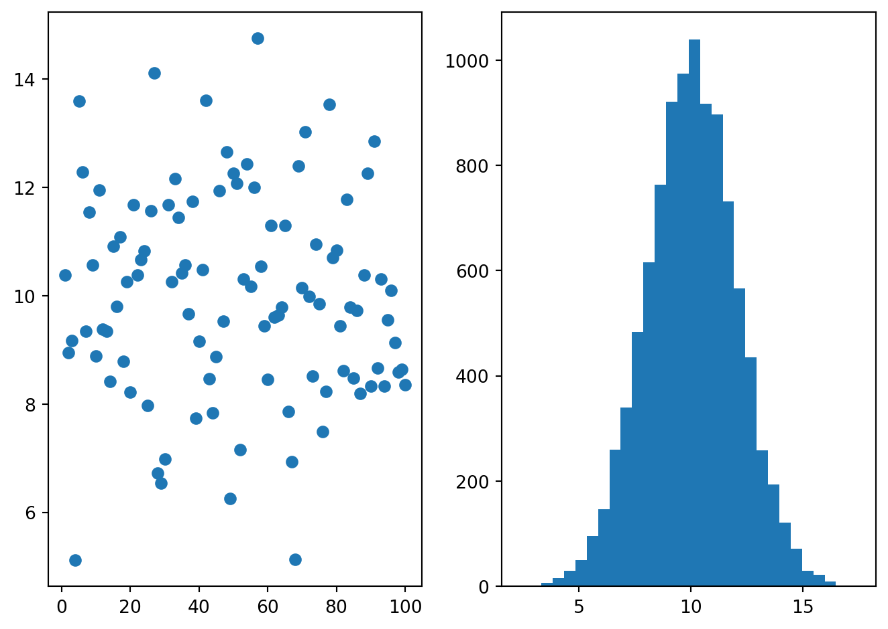

def serial(r1, r2):
return r1 + r2
def parallel(r1, r2):
return 1 / (1 / r1 + 1 / r2)
r1 = 10
r2 = 20
r3 = 50
print(serial(r1, r2))
print(parallel(r1, r2))
print(parallel(serial(r1, r2), r3))30
6.666666666666666
18.75def serial(r1, r2):
return r1 + r2
def parallel(r1, r2):
return 1 / (1 / r1 + 1 / r2)
r1 = 10
r2 = 20
r3 = 50
print(serial(r1, r2))
print(parallel(r1, r2))
print(parallel(serial(r1, r2), r3))30
6.666666666666666
18.75Eine einfache Implementierung der Funktion verwendet einen langen if/elif/else-Block:
def month_name(month):
if month == 1:
return "Januar"
elif month == 2:
return "Februar"
elif month == 3:
return "März"
elif month == 4:
return "April"
elif month == 5:
return "Mai"
elif month == 6:
return "Juni"
elif month == 7:
return "Juli"
elif month == 8:
return "August"
elif month == 9:
return "September"
elif month == 10:
return "Oktober"
elif month == 11:
return "November"
elif month == 12:
return "Dezember"
while True:
month = int(input("Bitte geben Sie eine Zahl zwischen 1 und 12 ein: "))
if 1 <= month <= 12:
break
print("Ungültige Eingabe, bitte versuchen Sie es erneut.")
print(month_name(month))Etwas kürzer könnte man die Funktion mit Hilfe einer Liste schreiben (der restliche Code bleibt gleich):
def month_name(month):
months = [
"Januar",
"Februar",
"März",
"April",
"Mai",
"Juni",
"Juli",
"August",
"September",
"Oktober",
"November",
"Dezember",
]
return months[month - 1]Auch mit einem Dictionary lässt sich die Funktion umsetzen:
def month_name(month):
months = {
1: "Januar",
2: "Februar",
3: "März",
4: "April",
5: "Mai",
6: "Juni",
7: "Juli",
8: "August",
9: "September",
10: "Oktober",
11: "November",
12: "Dezember",
}
return months[month]Eine sehr kompakte Lösung ergibt sich, wenn man das Modul calendar aus der Standardbibliothek verwendet. Dies setzt aber natürlich voraus, dass man das Modul kennt (in diesem Kurs haben wir es nicht behandelt, daher ist diese Lösung nur der Vollständigkeit halber aufgeführt):
import calendar
def month_name(month):
return calendar.month_name[month]def count_words(text, sep=" "):
return len(text.split(sep))
text = (
"Python is an easy to learn, powerful programming language. It has efficient "
"high-level data structures and a simple but effective approach to object-oriented "
"programming. Python's elegant syntax and dynamic typing, together with its "
"interpreted nature, make it an ideal language for scripting and rapid application "
"development in many areas."
)
count_words(text)49def factorial(n):
if n == 0:
return 1
result = 1
for i in range(1, n + 1):
result *= i
return result
factorial(5)120def is_divisible(n, m):
return n % m == 0
print(is_divisible(10, 2))
print(is_divisible(10, 3))
print(is_divisible(10, 5))
print(is_divisible(10, 7))True
False
True
FalseDas Problem ist, dass der elif-Zweig nach dem else-Block steht. In Python muss der (optionale) else-Block immer am Ende eines if/elif/else-Blocks stehen. Die korrigierte Version sieht also wie folgt aus:
x = 10
if x > 0:
print("x is positive.")
elif x < 0:
print("x is negative.")
else:
print("x is zero.")import math
numbers = [math.sqrt(i) for i in range(0, 1001, 10)]
print(len(numbers), sum(numbers))101 2123.3522772551064Der Code funktioniert nicht, weil nach der for-Schleife ein Doppelpunkt (:) fehlt. Der korrekte Code lautet:
for x in range(10):
print(x)import math
result = (17 * (math.sqrt(5) + 2/3)) / (27.7 - 3**math.pi) + 42**(2/7)
print(f"{result:.2f}")-9.93Der Code funktioniert nicht, weil lambda ein reserviertes Schlüsselwort in Python ist und daher nicht als Name verwendet werden kann. Der korrekte Code könnte wie folgt aussehen:
alpha = 5
lambda_ = 7
print(alpha + lambda_)import math
def std(x):
n = len(x)
mean = sum(x) / n
var = sum([(xi - mean)**2 for xi in x]) / (n - 1)
return math.sqrt(var)
std([10, 12, 23, 23, 16, 23, 21, 16])5.237229365663817def get_even(x):
return [xi for xi in x if xi % 2 == 0]
get_even([1, 45, -4, -5, 17, 2])[-4, 2]Wichtig ist, dass die Teilbarkeit durch 3 und 5 (also 15) zuerst überprüft wird!
def fizzbuzz(n):
if n % 15 == 0:
return "Fizzbuzz"
elif n % 3 == 0:
return "Fizz"
elif n % 5 == 0:
return "Buzz"
else:
return str(n)
for i in range(1, 16):
print(fizzbuzz(i))1
2
Fizz
4
Buzz
Fizz
7
8
Fizz
Buzz
11
Fizz
13
14
Fizzbuzzdef add(x, y=1):
return x + yx.x wurde doppelt übergeben, einmal als positionales Argument (4) und einmal als Schlüsselwortargument (x=2).x.def is_even(n):
return n % 2 == 0
print(is_even(10))
print(is_even(11))True
Falsedef sign(n):
if n > 0:
return 1
elif n < 0:
return -1
else:
return 0Beachten Sie, dass der else-Block nicht notwendig ist und weggelassen werden kann:
def sign(n):
if n > 0:
return 1
elif n < 0:
return -1
return 0Eine noch kompaktere Version verwendet die Tatsache, dass in Python Werte vom Typ bool als Ganzzahlen interpretiert werden können (True entspricht 1, False entspricht 0):
def sign(n):
return (n > 0) - (n < 0)Im Rahmen dieses Kurses ist diese Lösung aber zu fortgeschritten, da wir diese Eigenschaft von bool-Werten nicht behandelt haben.
x = "Pythonista"
for c in x:
print(c)P
y
t
h
o
n
i
s
t
ay = ["This", "is", "a", "sample", "list"]
z = [word.upper() for word in y]
z['THIS', 'IS', 'A', 'SAMPLE', 'LIST']s = "Donaudampfschifffahrtsgesellschaft"
print(len(s))
print(s.index("f"))
print(s.count("e"))34
9
2x = [-13, 22, -2, -14, 33, -16]
y = [abs(num) for num in x]
y[13, 22, 2, 14, 33, 16]from numpy.random import default_rng
rng = default_rng(1)
x = rng.integers(0, 101, size=(15, 5))
x.mean(axis=0)array([42. , 61.33333333, 55.6 , 38.6 , 49.93333333])import numpy as np
x = np.linspace(10, 13, 1000)from numpy.random import default_rng
rng = default_rng(2)
x = 10 + 2 * rng.standard_normal(10000)
import matplotlib.pyplot as plt
fig, ax = plt.subplots()
ax.hist(x, bins=50)
plt.show()
from numpy.random import default_rng
rng = default_rng(2)
x = 10 + 2 * rng.standard_normal(10000)
import matplotlib.pyplot as plt
fig, ax = plt.subplots()
ax.bar(range(100), x[:100])
plt.show()
with open("shakespeare.txt") as f:
lines = 0
for line in f:
lines += 1
if "Go antickly, show outward hideousness," in line:
print(f'"Go antickly, show outward hideousness," found in line {lines}.')
print(f"Total number of lines: {lines}")"Go antickly, show outward hideousness," found in line 92053.
Total number of lines: 151570numbers = []
for n in range(1001):
if (n % 3 == 0 or n % 5 == 0) and n % 15 != 0:
numbers.append(n)
sum(numbers)201003x = "Pythonista"
for c in x:
print(c.upper(), end='-')P-Y-T-H-O-N-I-S-T-A-def kmh_to_mph(kmh):
return kmh / 1.609
def mph_to_kmh(mph):
return 1.609 * mph
kmh_to_mph(mph_to_kmh(65))65.0Jede Listen-Methode ändert die Liste in-place und gibt daher nichts (None) zurück – daher wird im Beispiel x auf None gesetzt. Die korrekte Variante ist:
x = [1, 2, 3, 4]
x.append(5)Da der String selbst doppelte Anführungszeichen enthält, können wir diesen entweder mit einfachen Anführungszeichen umschließen:
s = 'Er sagte: "Sicher!"'Alternativ können wir die doppelten Anführungszeichen mit einem Backslash maskieren (Escape-Zeichen):
s = "Er sagte: \"Sicher!\""x = "abcdefghijklmnopqrstuvwxyz"
a = x[::2]
b = x[1::2]
print(a)
print(b)acegikmoqsuwy
bdfhjlnprtvxzs = "eins/zwei/drei/vier/fünf/sechs/sieben/acht"
words = s.split("/")
words['eins', 'zwei', 'drei', 'vier', 'fünf', 'sechs', 'sieben', 'acht']def replace_vowels(text, char):
vowels = "aeiouAEIOU"
for vowel in vowels:
text = text.replace(vowel, char)
return text
print(replace_vowels("Hello World!", "*"))
print(replace_vowels("PYTHON IS FUN", "#"))H*ll* W*rld!
PYTH#N #S F#NDer Code funktioniert nicht, weil die eingebaute Funktion sum nur ein einziges Argument (wie z.B. eine Liste oder ein Tupel) akzeptiert. Der Versuch, mehrere separate Argumente zu übergeben, führt zu einem Fehler.
Ein korrekter Funktionsaufruf wäre daher:
sum([1, 2, 3, 4, 5])Lösung mit einer while-Schleife:
def countdown(start=5, step=1):
n = start
while n >= 0:
print(n, end=" - ")
n -= step
print("Liftoff!")
countdown()
countdown(7, 2)5 - 4 - 3 - 2 - 1 - 0 - Liftoff!
7 - 5 - 3 - 1 - Liftoff!Lösung mit einer for-Schleife:
def countdown(start=5, step=1):
for n in range(start, -1, -step):
print(n, end=" - ")
print("Liftoff!")
countdown()
countdown(7, 2)5 - 4 - 3 - 2 - 1 - 0 - Liftoff!
7 - 5 - 3 - 1 - Liftoff!from numpy.random import default_rng
rng = default_rng(2)
y = 10 + 2 * rng.standard_normal(10000)
import matplotlib.pyplot as plt
fig, axes = plt.subplots(1, 2)
axes[0].scatter(range(1, 101), y[:100])
axes[1].hist(y, bins=30)
fig.set_tight_layout(True)
plt.show()
x = ["This", "is", "a", "sample", "list"]
lengths = [len(word) for word in x]
lengths[4, 2, 1, 6, 4]def is_anagram(str1, str2):
return sorted(str1) == sorted(str2)
print(is_anagram("listen", "silent"))
print(is_anagram("hello", "world"))True
Falsedef filter_numbers(numbers, even=True):
if even:
return [n for n in numbers if n % 2 == 0]
else:
return [n for n in numbers if n % 2 != 0]for i in range(1, 11):
print(f"Hello number {i}!")Hello number 1!
Hello number 2!
Hello number 3!
Hello number 4!
Hello number 5!
Hello number 6!
Hello number 7!
Hello number 8!
Hello number 9!
Hello number 10!def ps_to_kw(ps):
return ps / 1.36
def kw_to_ps(kw):
return kw * 1.36
print(ps_to_kw(100))
print(kw_to_ps(73.53))73.52941176470588
100.00080000000001s = "supercalifragilisticexpialidocious"
print("1.", len(s))
first_i = s.index("i")
print("2.", first_i)
second_i = s.index("i", first_i + 1)
print("3.", second_i)
print("4.", s.count("i"))
print("5.", s.upper())
print("6.", s.replace("i", "!"))1. 34
2. 8
3. 13
4. 7
5. SUPERCALIFRAGILISTICEXPIALIDOCIOUS
6. supercal!frag!l!st!cexp!al!doc!ousdef longest_word(sentence):
words = sentence.split()
longest = ""
for word in words:
if len(word) > len(longest):
longest = word
return longest
longest_word("The quick brown fox jumps over the lazy dog")'quick'import math
x = [math.sqrt(i) for i in range(300, 701) if i % 2 == 0]
print(len(x))
print(sum(x))201
4463.256267295718def count_lower(s):
count = 0
for char in s:
if char.islower():
count += 1
return count
print(count_lower("Hello World!"))
print(count_lower("WHAT IS GOING ON???"))
print(count_lower("nnYzKllLSIkcJD4eEx"))8
0
9def check_parity(n):
if n % 2 == 0:
return 0
else:
return 1
print(check_parity(4))
print(check_parity(-7))0
1Der Code funktioniert nicht, weil lambda ein reserviertes Schlüsselwort in Python ist und daher nicht als Funktionsname verwendet werden kann. Um die Funktion korrekt zu implementieren, sollte ein anderer Name verwendet werden, zum Beispiel lambda_:
def lambda_(x):
return x + 1def cm_to_inches(cm):
return cm / 2.54
def inches_to_cm(inches):
return inches * 2.54
print(cm_to_inches(10))
print(inches_to_cm(5))
print(cm_to_inches(inches_to_cm(5)))3.937007874015748
12.7
5.0def sum_squares(numbers):
return sum([x**2 for x in numbers])
print(sum_squares([1, 2, 3, 4, 5]))55from numpy.random import default_rng
rng = default_rng(1)
x = rng.normal(10, 2, 1000)
y = rng.uniform(5, 15, 1000)
z = rng.chisquare(6, 1000)
import matplotlib.pyplot as plt
fig, axes = plt.subplots(1, 3)
axes[0].scatter(x, y)
axes[1].scatter(x, z)
axes[2].scatter(y, z)
fig.set_tight_layout(True)
def is_prime(n):
if n <= 1:
return False
for i in range(2, n):
if n % i == 0:
return False
return True
print(is_prime(7))
print(is_prime(10))True
FalseUm die Effizienz der Funktion zu verbessern, können Sie die Schleife so ändern, dass sie nur bis zur Quadratwurzel von \(n\) (inklusive) geht. Wenn \(n\) durch eine Zahl größer als seine Quadratwurzel teilbar ist, muss es auch durch eine kleinere Zahl teilbar sein.
def f(x):
return x // 2 if x % 2 == 0 else 3 * x + 1
n = 1000
i = 0
while n > 1:
n = f(n)
i += 1
print(i)111Im Funktionskopf fehlen die Klammern nach f für die (leere) Parameterliste. Der korrekte Code lautet:
def f():
return 42print("Countdown starting now!")
for i in range(10, -1, -1):
print(f"t minus {i}...")
print("Lift-off!")Countdown starting now!
t minus 10...
t minus 9...
t minus 8...
t minus 7...
t minus 6...
t minus 5...
t minus 4...
t minus 3...
t minus 2...
t minus 1...
t minus 0...
Lift-off!def f_statistic(ssm, ssr, p, n):
return (ssm / (p - 1)) / (ssr / (n - p))
f_statistic(2452, 1688, 4, 412)197.55450236966823def convert_celsius(c, to="K"):
if to == "K":
return c + 273.15
elif to == "F":
return c * 9 / 5 + 32
convert_celsius(100)
convert_celsius(38, to="F")
convert_celsius(0, to="K")273.15sum ist eine eingebaute Funktion und wird im Beispiel “überschrieben”, und zwar mit einem Integer, welcher eine Summe über eine Schleife beinhaltet. Danach kann die eingebaute Funktion sum nicht mehr aufgerufen werden. Es wäre hier also besser, anstelle von sum einen Namen zu verwenden, der keiner eingebauten Funktion entspricht, z.B. s:
s = 0
for i in range(10):
s += i
sum([1, 2, 3, 4, 5])15Ein Tuple mit einem einzigen Element erstellt man mit einem Komma am Ende:
x = 2,
print(x[0])2def describe_number(n):
if n % 10 == 0:
return 10
elif n % 2 == 0:
return 1
else:
return 2
s = 0
for n in range(-110, 231):
s += describe_number(n)
print(s) # 826826a = 3
if a < 10: # Doppelpunkt am Ende fehlte
print("a is less than 10.") # Klammern für Funktionsaufruf fehltena is less than 10.import math
def f(s1, s2):
return math.sqrt((s1**2 + s2**2) / 2)
f(5, 27) # 19.416487838947619.4164878389476import math
def decibel(x, to="power"):
if to == "power":
return 10 * math.log10(x)
elif to == "amplitude":
return 20 * math.log10(x)